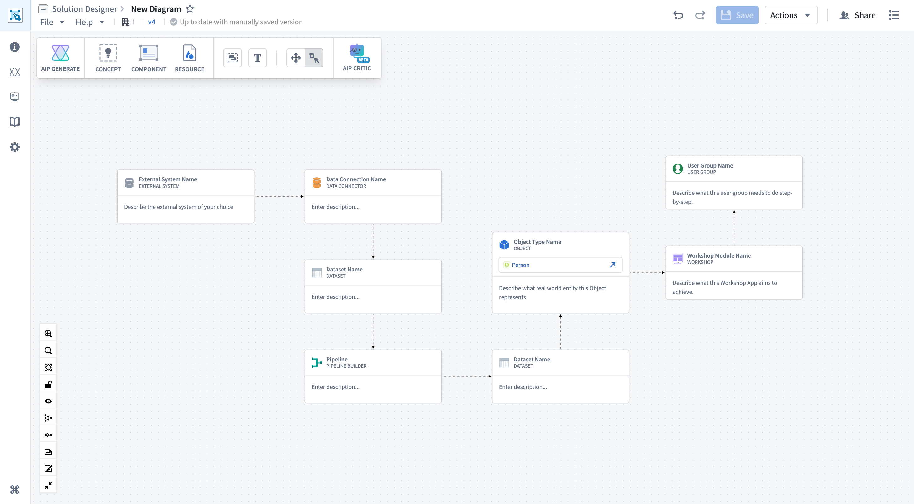
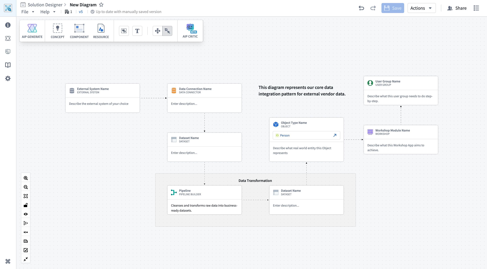

Tutorial: Create your first diagram
In this tutorial, you will create a simple diagram representing a common data integration pattern. The pattern includes connecting to an external system, transforming data, building an ontology, and creating a user-facing application.
By the end of this tutorial, you will know how to:
- Add component nodes to your diagram.
- Create connections between nodes.
- Group related nodes together.
- Save your diagram.
Create a new diagram
- Navigate to Solution Designer in your Foundry enrollment.
- Select New diagram from the home screen.
- An empty canvas opens where you can start building your diagram by adding nodes, loading a graph from Data Lineage, or exploring reference examples.
Add your first nodes
Follow the instructions in the sections below to build a diagram that shows data flowing from an external system through Foundry and into a Workshop application.
Add an external system node
- Select the Component button in the upper left toolbar or press
Cmd/Ctrl + B to open the component search and selection modal.
- Select External system from the left panel in the component search and selection modal.
- Choose the relevant External system type, such as Data Store or File Store, and the node appears on your canvas.
Add a data sourcing node and connect it to your external system node
Next, add a node to represent how Foundry connects to the external system.
- Open the component search and selection modal (
Cmd/Ctrl + B).
- Search for and add a Data sourcing node, such as Data Connector or Data Connection Agent.
- Hover over the External system node's right connection handle.
- Click and drag to the Data sourcing node's left connection handle.
Complete the data flow
Continue building the diagram by adding the following nodes in sequence:
- Dataset: Open the component search and selection modal, search for and select Dataset.
- Pipeline Builder: Add a Pipeline Builder node to represent data transformation.
- Dataset: Add another Dataset node to represent the transformed data.
- Object type: Select the Resource button in the top left toolbar, choose New object node, and select an object type from your ontology. You can also create a generic object node not linked to an existing object type if you prefer.
- Workshop: Add a Workshop node to represent the user-facing application.
- User group: Add a User Group node to represent a group of users and tasks they need to perform.

Your diagram now shows a complete data integration and application workflow.
Group related nodes
To organize your diagram, group the data transformation components together.
Create a group
- Hold
Cmd (macOS) or Ctrl (Windows) and select the Pipeline Builder node.
- Continue holding
Cmd/Ctrl and select the Dataset node immediately after Pipeline Builder, which represents transformed data.
- Validate that both nodes display highlighted borders, indicating they have been selected.
- Select the Group button to the left of Add Text node in the diagram toolbar.
- A group container is created around the two selected nodes.
Name the group
- Select the newly created Group on your canvas.
- Choose the default Group label to provide the group with a descriptive name, such as
Data Transformation.
- Select anywhere on your canvas outside the group's borders and Save your changes.
Your diagram now has a logical grouping that makes it easier to understand your workflow's architecture.
Add descriptions and context
Add node descriptions
You can add notes to individual nodes to document their purpose:
- Select the Pipeline Builder node.
- Choose Enter description... and add a description, such as:
Cleanses and transforms raw data into business-ready datasets.
- Repeat this process for other key nodes in your diagram.
Add a text node for comments
To add general comments to your diagram:
- Select the Add Text node button in the upper left toolbar, and a text node appears on your canvas.
- Select Double click to edit to edit the text.
- Enter a description of your diagram, such as:
This diagram represents our core data integration pattern for external vendor data.
- Select and drag the text node to position it near the top of your diagram.
Save your diagram
Now that your diagram is complete, save it to the Foundry filesystem:
- Select Save in Solution Designer header.
- A Save modal renders if this is your first save, where you can enter a File name, such as
First Diagram, and choose a save Location.
- Select Save to complete the save process.

Your diagram is now saved and will auto-save as you make future changes. Select Draft saved from the file header to view a modal with additional information about your auto-saved draft.
Next steps
Now that you have created your first Solution Designer diagram, continue exploring its features and capabilities by:
- Exploring reference patterns: Select Reference Diagrams in the navigation bar on the left side of your screen to browse pre-built industry and technical patterns.
- Linking resources: Select nodes in your diagram and use the Link resource button in the node toolbar to connect them to actual Foundry datasets, pipelines, or applications.
- Using AIP Architect: Try AIP Architect to generate workflow plans based on your requirements.
- Reviewing your diagram: Use AIP Critic to get AI-powered feedback on your architecture.
- Customizing your diagram's view: Open Graph Settings to experiment with different display options, such as icons-only mode or edge animation.
For more details on diagram features and capabilities, see Diagrams.
Tips
- Start conceptually: Begin with high-level components and refine later. You do not need to specify exact datasets or pipelines in your first draft.
- Use groups liberally: Group nodes by function (for example, "Data Ingestion", "Processing Layer", "Application Layer") to make complex diagrams easier to navigate.
- Leverage patterns: Browse the reference architecture library for proven patterns that match your use case. You can load a pattern and customize it rather than starting from scratch.
- Iterate with feedback: Use AIP Critic to validate your design, then refine based on suggestions.
- Think about layers: Organize your diagram in logical layers from left to right (data sources â ingestion â processing â ontology â applications â users) for easy comprehension.